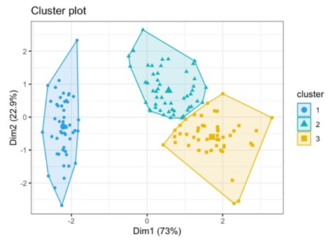

K means clustering, assigns data points to one of the K clusters depending on their distance from the center of the clusters. It starts by randomly assigning the clusters centroid in space. Then each data point is assigned to one of the clusters based on its distance from centroid of the cluster. After assigning each point to one of the cluster, new cluster centroids are assigned. This process runs iteratively until it finds a good cluster. In the analysis we assume that the number of cluster is given in advanced and we have to put points in one of the group.
All the objects in the same group called cluster and should be more similar to each other than to those in other clusters. Data points from different clusters should be as different as possible. Clustering allows you to find and organize data into groups that have been formed organically, rather than defining groups before looking at the data.

Each cluster is represented by its center called a “centroid”, which corresponds to the arithmetic mean of data points assigned to the cluster. A centroid is a data point that represents the center of the cluster (the mean), and it might not necessarily be a member of the dataset. This way, the algorithm works through an iterative process until each data point is closer to its own cluster’s centroid than to other clusters’ centroids, minimizing intra-cluster distance at each step.
Objective of K-means clustering
The primary objective of k-means clustering is to partition your data into K clusters in such a way that the within-cluster variance is minimized. This means that the data points within each clusters are as close to each other as possible, while the distance between different clusters is maximized. Mathematically, this is achieved by minimizing the sum of squared distances between data points and their respective cluster centroids.
How does k-means cluster works?
Let us see how K-means works step by step. The algorithm can be divided into around 5 to 6 main steps.
1. Initial step: Choose the desired number of clusters (K) that you want the algorithm to identify within your dataset.
2. Random initialization: Randomly assign K cluster centroids to your dataset. These centroids serve as the starting points for each cluster.
3. Assigning data points: For each data point in your dataset, calculate the distance between that point and each cluster centroid using a distance metric (commonly the Euclidean distance). Place the data point to the cluster with the closest centroid.
4. Updating Cluster centroids: Once all data points have been assigned to clusters, calculate the new centroids for each cluster by taking the mean (average) of all the data points belonging to that cluster.
5. Iterative process: Steps 3 and 4 should be repeated until convergence occurs, which occurs when the cluster assignments no longer change appreciably or when the maximum number of iterations is reached.
6. Result: The final output of the K-means clustering algorithm is a set of K clusters with each data point assigned to one of these clusters.